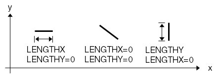

|
Returns the length of each edge on the input layer. |
|
|
Returns the length of each edge parallel to the desired axis. |
 |
|
Returns length of each edge’s projection onto the desired axis. |
See “Measurement Functions” for information on using the DFM measurement functions, including cell context dependencies and per-shape evaluation.